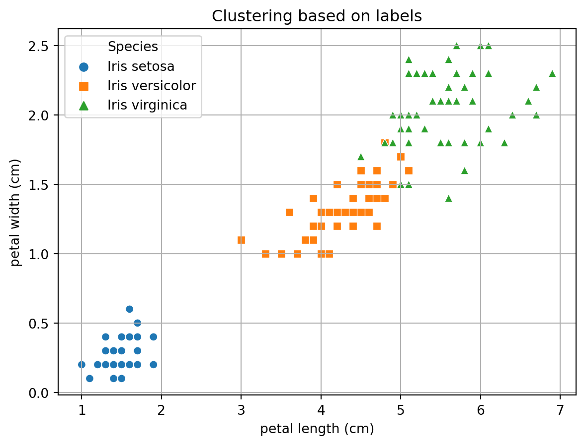
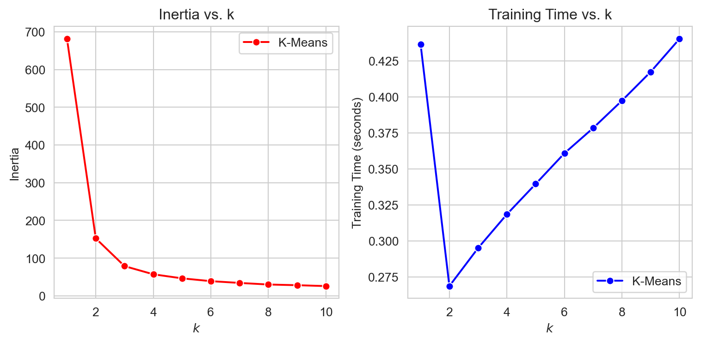
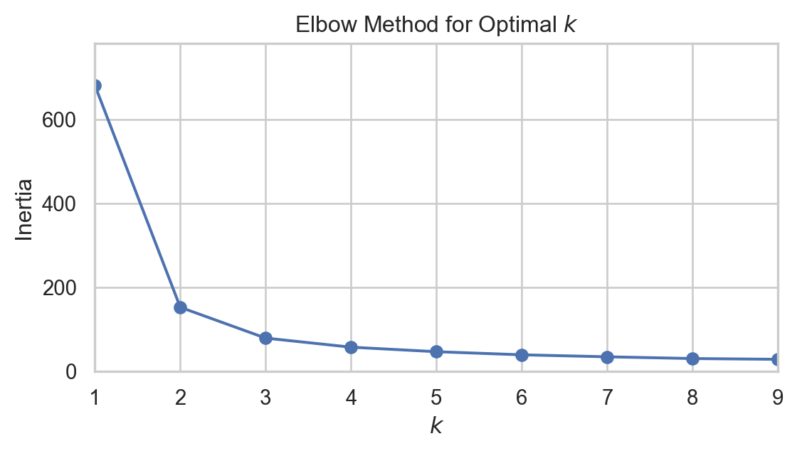
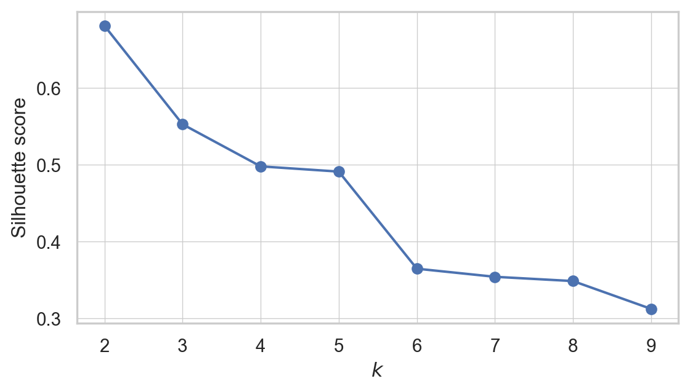
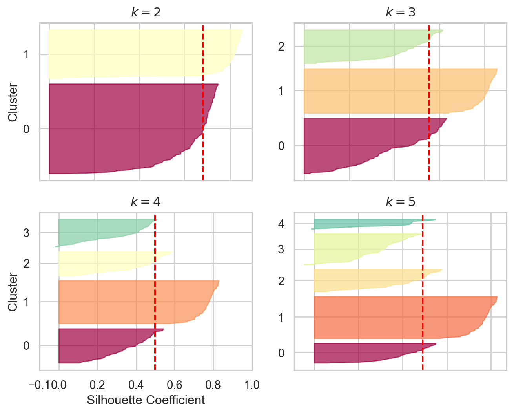
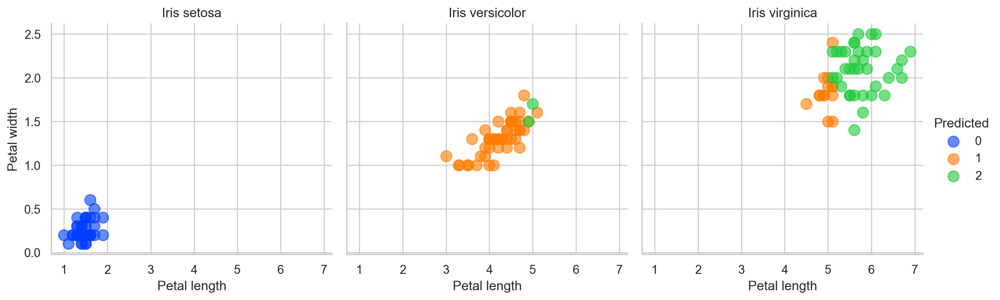

import sklearn
from sklearn import datasets
import pandas as pd
import numpy as np
from matplotlib import pyplot as plt
import seaborn as sns
import warnings
warnings.filterwarnings('ignore')
iris = datasets.load_iris(as_frame = True)
X = iris.data
y = iris.targetSo What is Clustering Anyway?
You are on your first day at your job and have just been handed a huge amount of data about your customers. You have been tasked to identify the buying groups your company can direct the advertisement of products to. “Well, that is a mammoth task”-you say to yourself wondering how you can do it. Not to worry, you are familiar with machine learning. You can let an algorithm identify them for you. This task is called Clustering and our friend unsupervised machine learning is here to help you with that. In clustering, the goal is to group similar instances into clusters.
The Game Plan
We look at the IRIS dataset. It is a comprehensive dataset with 3 classes. We can do a simple classification problem. But let’s go another way. We will forget that the data is labeled. By clustering, we will see if our machine learning model can by itself create the classes. So, until the end, we are going in blind. And the interesting thing about going in blind, we do not have to do data splitting because there will be no traditional training and testing.
#plotting the classes
data = X.copy()
data['Cluster'] = y
# Mapping numerical labels to actual species names
species_map = {0: 'Iris setosa', 1: 'Iris versicolor', 2: 'Iris virginica'}
data['Cluster'] = data['Cluster'].map(species_map)
# Plotting
plt.figure(figsize=(7, 5))
sns.scatterplot(data=data, x='petal length (cm)', y='petal width (cm)', hue='Cluster', style='Cluster', markers=['o', 's', '^'])
plt.title("Clustering based on labels")
plt.grid(True)
plt.legend(title='Species')
plt.show()
This is what the plot scattered plot looks like in a two din=mensional space. I am only measuring in terms of petal length and width with the assumption that these two features will make the division more clear. And we can see the natural clustering with known labels in the plot.
K-Means Clusturing
Imagine you want to group a collection of points (or data points) into clusters. Each cluster should have a central point known as a “centroid.” The goal is to ensure each point in a cluster is close to its centroid. The challenge is that you initially don’t know where the centroids should be or which points belong to which cluster.
Steps to Cluster Data
1. Start by Guessing:
- Begin by making a guess about where the centroids might be. - You can do this randomly, such as by picking a few points from your data and using them as your initial centroids.
2. Assign Points to the Nearest Centroid:
- Examine each point in your data. - Assign it to the cluster of the closest centroid you guessed. - This forms your initial clusters.
3. Update Centroids:
- Once you have your initial clusters, find the new center for each cluster. - The new center is the average position of all points in the cluster. - These average positions become your new centroids.
4. Repeat:
- With these new centroids, reassign each point to the closest centroid. - This step may shuffle some points between clusters.
5. Keep Going Until Stabilization:
- Continue updating the centroids and reassigning points. - Stop the process when the centroids do not change significantly anymore. - At this point, you have found a stable set of clusters.
This method is a basic implementation of a popular clustering algorithm known as “K-Means.” It’s a straightforward yet effective way to group data points into clusters when you don’t have predefined labels or categories. The algorithm is designed to converge to a solution in a reasonable amount of time, ensuring each iteration improves the clustering.
‘K’ in K-means Clusturing: Why Do We Need to Optimize?
In K-means clusturing, we have to first set the number of clusters to be made during the initialization of the model. If we make too many clusters, the computatinal time will increase and too few will not be useful. But we have no metrics to test the data against real labels so how do we do that?.
Inertia
Inertial is defined as the the sum of the squared distances between the instances and their closest centroids. So lets run a loop and produce the inertia for different number of clusters.
from sklearn.cluster import KMeans
from timeit import timeit
max_k = 10
data = {
'k': [],
'Inertia': [],
'Training Time': []
}
for k in range(1, max_k + 1):
kmeans_ = KMeans(n_clusters=k, algorithm="full", random_state=42)
print(f"\r{k}/{max_k}", end="") # \r returns to the start of line
training_time = timeit("kmeans_.fit(X)", number=10, globals=globals())
inertia = kmeans_.inertia_
data['k'].append(k)
data['Inertia'].append(inertia)
data['Training Time'].append(training_time)
df = pd.DataFrame(data)
sns.set_style("whitegrid")
plt.figure(figsize=(8, 4))
# Inertia plot
plt.subplot(121)
sns.lineplot(x='k', y='Inertia', data=df, marker='o', color='red', label="K-Means")
plt.title("Inertia vs. k")
plt.xlabel("$k$")
plt.ylabel("Inertia")
# Training time plot
plt.subplot(122)
sns.lineplot(x='k', y='Training Time', data=df, marker='o', color='blue', label="K-Means")
plt.title("Training Time vs. k")
plt.xlabel("$k$")
plt.ylabel("Training Time (seconds)")
plt.tight_layout()
plt.show()1/102/103/104/105/106/107/108/109/1010/10
As we can see from the plots, the inertial decreases with increased clusters. That is a good thing! But look the training time. This is increasing much more than we can take. Why? Remember your model will not be scalable if it takes up too much resources. But maybe we can find some way, When we plot inertia as a function of k, after some point, we see the gradient not being very high i.e. inertia is not decreasing that much. This point can look like an elbow, and the elbow joint can lead us to the optimum clusters. Maybe not fullproof but this is a step in the right direction. This method is evidently called Elbow Method.
import matplotlib.pyplot as plt
import seaborn as sns
kmeans_per_k = [KMeans(n_clusters=k, random_state=42).fit(X) for k in range(1, 10)]
inertias = [model.inertia_ for model in kmeans_per_k]
sns.set(style="whitegrid")
plt.figure(figsize=(6, 3.5))
plt.plot(range(1, 10), inertias, "bo-")
plt.xlabel("$k$")
plt.ylabel("Inertia")
plt.axis([1, 9, 0, max(inertias) + 100]) # Adjusted the axis for better visibility
plt.title("Elbow Method for Optimal $k$")
plt.tight_layout()
plt.show()
Can you notice the elbow like joint when k = 2? maybe 3? now we can identify the region but still there is another good metrics to find out.
Silhouette Score
An instance’s silhouette coefficient is equal to \[\frac{b - a}{\max(a, b)}\] where a is the mean distance to the other instances in the same cluster (i.e., the mean intra-cluster distance) and b is the mean nearest-cluster distance (i.e., the mean distance to the instances of the next closest cluster, defined as the one that minimizes b, excluding the instance’s own cluster).
The silhouette coefficient can vary between –1 and +1. A coefficient close to +1 means that the instance is well inside its own cluster and far from other clusters, while a coefficient close to 0 means that it is close to a cluster boundary; finally, a coefficient close to –1 means that the instance may have been assigned to the wrong cluster.
from sklearn.metrics import silhouette_score
silhouette_scores = [silhouette_score(X, model.labels_) for model in kmeans_per_k[1:]]
plt.figure(figsize=(6, 3.5))
plt.plot(range(2, 10), silhouette_scores, "bo-")
plt.xlabel("$k$")
plt.ylabel("Silhouette score")
plt.grid(True, which='both', linestyle='-', linewidth=0.5)
plt.tight_layout()
plt.show()
so when k=2, the silhoutte score is highest. Maybe then the data can be divided into two clusters. But hold your horses. We have one more thing to do. We need to see the Silhoutte Diagram!
Silhouette Diagram
A more detailed visual representation can be achieved by plotting the silhouette coefficient of each instance. These plots are organized by the cluster assignment and the coefficient values. Such visualizations are known as silhouette diagrams. Each cluster in the diagram is represented by a ‘knife-like’ shape, where the height shows how many instances are in the cluster, and the width indicates the silhouette coefficients of the instances, sorted within the cluster. In these diagrams, wider shapes are indicative of better clustering.
The average silhouette score for each potential number of clusters is marked by vertical dashed lines in the diagram. If the silhouette coefficients of most instances in a cluster are less than this average score, meaning that the knife shapes fall short of the dashed line, it suggests that the cluster is not well-defined. This happens when the instances are too close to instances in other clusters, implying a less than optimal clustering arrangement.
from sklearn.metrics import silhouette_samples
from matplotlib.ticker import FixedLocator, FixedFormatter
plt.figure(figsize=(8, 6))
for k in (2,3, 4, 5):
plt.subplot(2, 2, k - 1)
y_pred = kmeans_per_k[k - 1].labels_
silhouette_coefficients = silhouette_samples(X, y_pred)
padding = len(X) // 30
pos = padding
ticks = []
for i in range(k):
coeffs = silhouette_coefficients[y_pred == i]
coeffs.sort()
color = plt.cm.Spectral(i / k)
plt.fill_betweenx(np.arange(pos, pos + len(coeffs)), 0, coeffs,
facecolor=color, edgecolor=color, alpha=0.7)
ticks.append(pos + len(coeffs) // 2)
pos += len(coeffs) + padding
plt.gca().yaxis.set_major_locator(FixedLocator(ticks))
plt.gca().yaxis.set_major_formatter(FixedFormatter(range(k)))
if k in (2, 4):
plt.ylabel("Cluster")
if k in (4, 6):
plt.gca().set_xticks([-0.1, 0, 0.2, 0.4, 0.6, 0.8, 1])
plt.xlabel("Silhouette Coefficient")
else:
plt.tick_params(labelbottom=False)
plt.axvline(x=silhouette_scores[k - 2], color="red", linestyle="--")
plt.title(f"$k={k}$")
plt.show()
Interpetting the Silhoutte Diagram
For
k=2: This setup shows two clusters with a fairly good silhouette width for the larger cluster. This suggests a decent separation between clusters. However, the simplicity of having only two clusters might not capture all the nuances in the data.For
k=3: Increasing the cluster count to three shows more uniformity in silhouette widths, indicating that the clusters might be more distinct and appropriately separated. Yet, some instances below the average silhouette score signal potential overlap between clusters.For
k=4: Here, the silhouette widths start to vary more significantly, implying different levels of cohesion within the clusters. The presence of lower silhouette scores within some clusters indicates potential misplacements or that these clusters are not capturing a distinct grouping in the data.For
k=5: With five clusters, we notice even more variation in silhouette widths, with generally narrower shapes compared tok=3. This suggests that the additional cluster may not be necessary as it does not seem to capture distinct groupings, and some points could potentially belong to other clusters.
Based on this analysis, k=3 may be the most appropriate number of clusters for this dataset, as the clusters display a balance of separation and uniformity in silhouette widths. As the number of clusters increases to 4 and 5, the silhouette diagrams indicate a diminishing return in cluster definition and separation.
Overall Comparison With the Actual Labels
Finally we can now create three 2D spaces for actual labels and see how the clusters show the real labels. We are doing this just because we pretended we do not have actual labels so now we can compare!
from scipy import stats
kmeans = KMeans(n_clusters=3, random_state=42)
y_pred = kmeans.fit_predict(X)
# Create a mapping based on modes
mapping = {}
for class_id in np.unique(y):
mode, _ = stats.mode(y_pred[y == class_id])
if np.isscalar(mode):
mapping_key = mode
else:
mapping_key = mode[0] if mode.size > 0 else -1
mapping[mapping_key] = class_id
y_pred = np.array([mapping.get(cluster_id, -1) for cluster_id in y_pred])
data = X.copy()
data['Predicted'] = y_pred
data['Actual'] = y
label_names = {0: 'Iris setosa', 1: 'Iris versicolor', 2: 'Iris virginica'}
data['Actual Names'] = data['Actual'].map(label_names)
# Plotting using FacetGrid
plt.figure(figsize=(6, 4))
g = sns.FacetGrid(data, col="Actual Names", hue="Predicted", palette="bright", height=4, aspect=1)
g.map(plt.scatter, 'petal length (cm)', 'petal width (cm)', alpha=0.6, s=100)
g.add_legend()
g.set_titles("{col_name}")
for ax in g.axes.flatten():
ax.grid(True)
ax.set_xlabel("Petal length")
ax.set_ylabel("Petal width")
plt.show()<Figure size 576x384 with 0 Axes>
So our dear to heart K-Means model did made some error. But remember “To err is human”. See what I did there? Good luck!